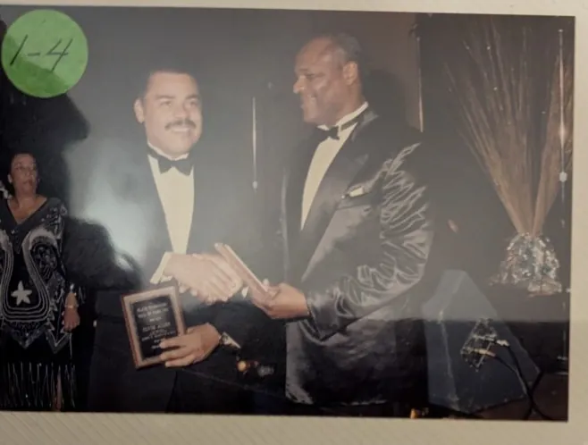

Fifteenth Annual · Awards and associated gatherings
Fifteenth Annual Oscar Micheaux Awards
The Fifteenth Annual Oscar Micheaux Awards formed part of the Hall of Fame's 1988 celebration. Photographs associated with the wider program show award presentations, musical performances, portraits and guests; some scenes may belong to the gala or other activities.